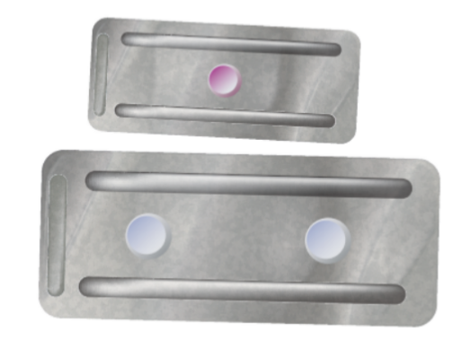
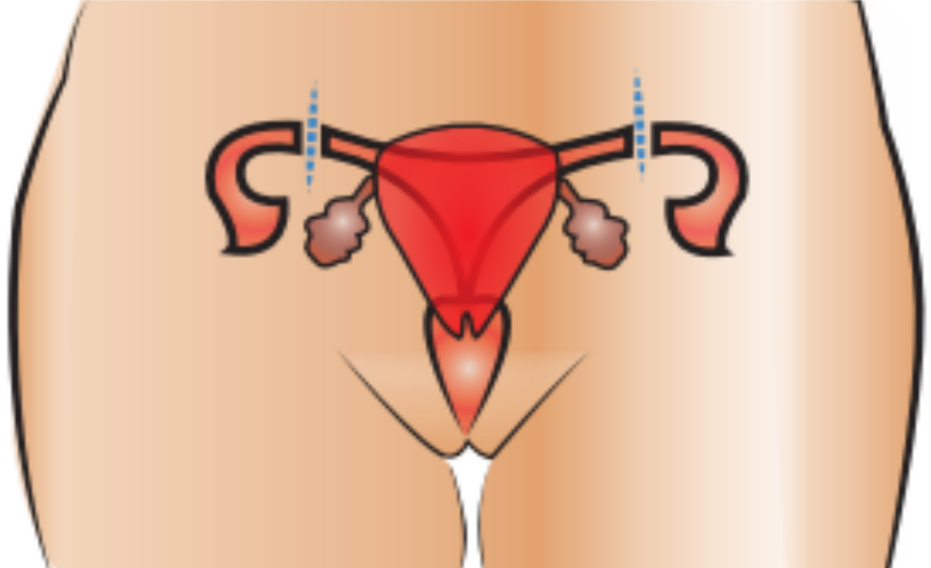
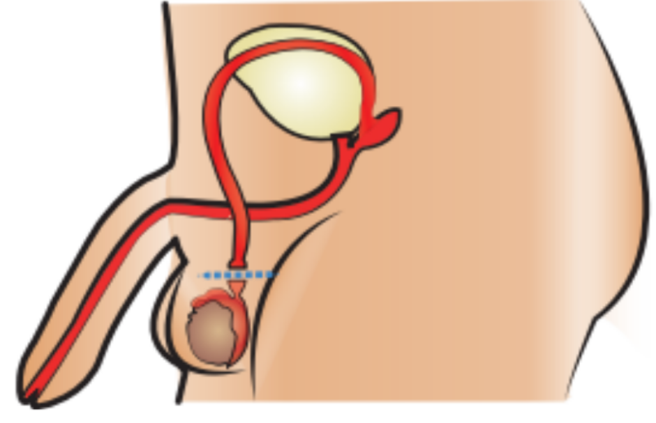
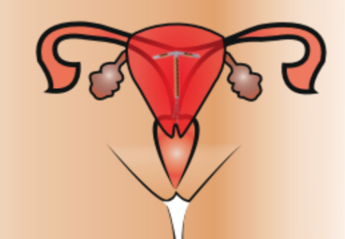

Click para ver el pdf del marco teóricoBreve Introducción a los metodos anticonceptivos
Según el Centro Nacional de Equidad de Género y Salud Reproductiva, los métodos anticonceptivos disponibles más importantes de los que se tienen fichas informativas hechas por el Gobierno de México, son: el condón masculino y femenino, las pastillas y los parches anticonceptivos/as, el implante subdérmico, las inyecciones anticonceptivas, la pastilla de anticoncepción de emergencia (PAE), el dispositivo intrauterino (DIU), el anillo vaginal, los métodos permanentes como pueden ser la vasectomía en el caso de los varones y la obstrucción tubaria bilateral (OTB) en el caso de las mujeres y el sistema intrauterino (SIU) no ser confundido con el DIU previamente mencionado). (Centro Nacional de Equidad de Género y Salud Reproductiva, 2017)
En este marco teórico trataremos a profundidad los 6 métodos anteriormente mencionados más populares entre la población mexicana: El condón masculino, la PAE, los métodos permanentes (la OTB y la vasectomía respectivamente), el DIU y el implante subdérmico. (García, 2019)
El condón masculino es una funda de látex que se coloca en el pene erecto antes de la relación sexual y que lo cubre por completo. (“Todo Sobre El Uso De Condón Masculino” - Sarah Salud Femenina, 2020) (“Todo Sobre El Uso De Condón Masculino” - Sarah Salud Femenina, 2020) Impide que los espermatozoides entren al interior de la vagina en la relación sexual, pues actúa como barrera y con esto evita el embarazo. Lo que hace que este método destaque sobre los demás, es que, si se usa correctamente, también disminuye la posibilidad de contraer una infección de transmisión sexual.Empaque de un preservativo tradicional.(“Todo Sobre El Uso De Condón Masculino” - Sarah Salud Femenina, 2020) Su efectividad como método anticonceptivo es del 85 al 95%. Si se utiliza correctamente la posibilidad de que falle disminuye. (Instituto Mexicano del Seguro Social, n.d.)
- Revisa que la fecha de fabricación no sea superior a 5 años de la fecha en que lo adquiriste, y que la envoltura contenga aire y no esté rota, el empaque debe abrirse con los dedos, no con los dientes.
- Se debe colocar en el pene erecto y antes de la penetración.
- Después de eyacular, los espermatozoides se alojarán en el receptáculo del condón por lo que debes retirar el pene aún estando erecto.
- Es importante sostenerlo desde la base del pene con papel higiénico antes de retirarlo para evitar que se derrame el semen en la vagina.
- Se debe tirar el condón en el bote de basura y usar un nuevo condón en cada nueva relación.
- Si lo traes contigo, evita que se exponga a fricciones, rupturas y altas temperaturas.
- Si deseas utilizar lubricante, éste debe ser a base de agua para no afectar ni dañar el condón. (Secretaría de Salud, n.d.)
Imagen que describe los pasos a seguir para colocarse un preservativo. (¿Qué Es El Condón?, n.d.)
En la siguiente gráfica se observan las respuestas de una encuesta realizada en el año 2000 a adolescentes solteros entre 12 y 19 años por la Secretaría de Salud respondiendo a la pregunta: ¿Quién decidió el uso del condón en la primera relación sexual? (Gayet, 2003) (Gayet, 2003) 
En la siguiente gráfica se muestra el uso del condón en los últimos seis meses en adolescentes y adultos jóvenes hombres y mujeres en Perú en 2006. (Soto, 2006)
(Soto, 2006)
Descripción
También llamada pastilla del día siguiente, es una pastilla que puedes utilizar sólo en casos de emergencia, para prevenir un embarazo no planeado, y se toma en los tres días siguientes de una relación sexual sin protección. Existen 2 tipos de presentación: de una y de dos pastillas. No se recomienda su uso de forma rutinaria, para ello existen métodos anticonceptivos mucho más efectivos. (Instituto Mexicano del Seguro Social, n.d.)
Contienen hormonas similares a las que produce el cuerpo de la mujer, las cuales inhiben la ovulación, cambian la consistencia de la capa interna del útero y las características del moco cervical, impidiendo de esta manera que ocurra un embarazo.(Secretaría de Salud, n.d.) Si es unidosis debe tomarse lo antes posible dentro de las primeras 72 horas después de la relación sexual no protegida. Si es de dos dosis: La primera pastilla debe tomarse lo antes posible dentro de las primeras 72 horas después de la relación sexual no protegida. La segunda dosis, 12 horas después de la primera pastilla. (Secretaría de Salud, n.d.) 
Presentaciones de la pastilla. (Secretaría de Salud, n.d.)
En las siguientes gráficas se nos muestra las dosis de pastillas del día siguiente entregadas tanto por los centros de atención primaria de salud como por los servicios de urgencia durante el 2015, 2016, 2017 y 2018 en Chile. (Yáñez, 2018) En la siguiente gráfica se nos muestra el ranking de los países con mayor uso de la pastilla del día siguiente en 2019 entre mujeres de 15-49 años de edad. (Ranking De Los Países Con Mayor Uso De La Píldora Como Método Anticonceptivo En 2019, 2021) 
(Yáñez, 2018)

(Ranking De Los Países Con Mayor Uso De La Píldora Como Método Anticonceptivo En 2019, 2021)
También llamado salpingoclasia, este método se realiza en aquellas mujeres que tienen el número de hijos deseado y no quieren tener más embarazos, y que han recibido previamente consejería; el procedimiento de anticoncepción se realiza en la mujer después de un parto, aborto, durante la cesárea o en cualquier momento que la mujer decida no tener más hijos. (Instituto Mexicano del Seguro Social, n.d.)
Funcionamiento y cómo se realiza
Se realiza una incisión en la pared abdominal con anestesia general, regional o local. Se localizan las Trompas de Falopio y se ligan y cortan fragmentos de dos a tres centímetros en cada una. Con esto quedan bloqueadas las trompas. (Secretaría de Salud, n.d.) 
Imagen de cómo se realiza la salpingoclasia. (Secretaría de Salud, n.d.)
Datos estadísticos
En esta gráfica se muestran los 5 municipios de Jalisco con mayor cantidad de mujeres entre 15-19 años con la salpingoclasia entre 2013 y 2016. (Ortiz & Hernández, 2016) 
Descripción
Método anticonceptivo permanente o definitivo para el hombre que ya tiene el número de hijos deseado, y que recibió previamente consejería. (Instituto Mexicano del Seguro Social, n.d.)
Funcionamiento y cómo se realiza
 (Instituto Mexicano del Seguro Social, n.d.) Consiste en una pequeña operación que puede realizarse con o sin bisturí, con anestesia local, haciendo una punción en la piel de la bolsa escrotal por arriba de donde se encuentran los testículos, a través de la cual se localizan, ligan y cortan los conductos deferentes, sitio por donde pasan los espermatozoides. La vasectomía sin bisturí sólo impide el paso de espermatozoides, los cuales se siguen produciendo pero son absorbidos por el organismo. (Instituto Mexicano del Seguro Social, n.d.)
Datos estadísticos
En esta gráfica se muestra el número de vasectomías realizadas en Colombia por Profamilia (Organización privada colombiana) entre 1970-2016. (Sánchez-Molano, 2019) En la siguiente gráfica se muestra el porcentaje de vasectomías según el nivel educativo en Colombia en 2015. (Sánchez-Molano, 2019) 
(Sánchez-Molano, 2019)

(Sánchez-Molano, 2019)
Descripción
El dispositivo intrauterino de cobre (DIU) es un método anticonceptivo seguro y eficaz que sirve para evitar temporalmente un embarazo. Está elaborado de plástico flexible, tiene una rama vertical y una horizontal a manera de T. La rama vertical está rodeada de un alambre de cobre, que impide el paso de espermatozoides. Existe una presentación que contiene hormonas similares a las que produce el cuerpo de la mujer. Se presenta esterilizado dentro de una bolsa sellada y viene acompañado de un pequeño aparato para insertarlo por personal calificado. (Instituto Mexicano del Seguro Social, n.d.) Funcionamiento y cómo se utiliza
El DIU funciona como una barrera, el cobre que lo recubre evita que el espermatozoide fecunde al óvulo. Debe de ser colocado por personal de salud calificado. Es recomendable ponerlo durante la menstruación, después de un parto, cesárea o aborto. (Secretaría de Salud, n.d.)  Imagen del DIU dentro del útero. (Secretaría de Salud, n.d.)
Datos estadísticos
En la siguiente gráfica, se muestra el porcentaje de diversos motivos de discontinuación del DIU en 192 mujeres de Paysandú en 2015. (Bertón, 2017) (Bertón, 2017)
Descripción
Es una varilla flexible que contiene una hormona derivada de la progesterona, que evita la ovulación y hace más espeso el moco del cuello del útero, impidiendo el paso de los espermatozoides al interior del útero. (Instituto Mexicano del Seguro Social, n.d.)
Funcionamiento y cómo se utiliza
Contiene hormonas similares a las que produce el cuerpo de la mujer, las cuales inhiben la ovulación, cambia la consistencia de la capa interna del útero y las características del moco cervical, impidiendo de esta manera que ocurra un embarazo. Su aplicación es rápida y sencilla.(Secretaría de Salud, n.d.) El personal médico capacitado aplica anestesia local e inserta el implante por debajo de la piel, en la parte interna del brazo. La aplicación se realiza en el consultorio médico, no requiere de hospitalización, sólo de un vendaje discreto. La mujer puede realizar con normalidad sus actividades diarias después de la aplicación. (Secretaría de Salud, n.d.) Imagen de cómo se coloca el implante. (Secretaría de Salud, n.d.)
Datos estadísticos
Esta gráfica muestra a mujeres de entre 20-24 años con el IS que trabajan en distintas zonas de Argentina en 2015 (alrededor de 1,101 mujeres). (Dirección de Salud Sexual y Reproductiva, 2018) Otra gráfica de la misma encuesta muestra la distribución de mujeres según situación con el IS. (Dirección de Salud Sexual y Reproductiva, 2018) 
(Dirección de Salud Sexual y Reproductiva, 2018)

(Dirección de Salud Sexual y Reproductiva, 2018)
Es importante señalar el hecho de que la educación sexual y la enseñanza sobre los métodos anticonceptivos no son iguales en todo el mundo, pues siempre vamos a encontrar una gran diferencia entre las culturas que se han implantado y desarrollado con décadas de historia. En el particular caso de la república mexicana, la educación sexual nunca ha sido uno de los puntos fuertes, pues encontramos a muy poca gente con conocimiento al respecto y con privilegio a poder aprender sobre los métodos anticonceptivos.
El tema de las infecciones de transmisión sexual es igual o incluso más importante que los métodos anticonceptivos, pues se tienen ideas muy distorsionadas en la mayoría de los habitantes del país sobre estos. Aunque principalmente estemos viendo los métodos anticonceptivos como idea clave en este marco teórico, resultaría más beneficioso e importante tratar a las infecciones de transmisión sexual con la misma relevancia que los métodos anticonceptivos.
El condón masculino es el anticonceptivo más popular y más comercializado en la república, gracias a su sencillo uso y su relativo acceso. Tal vez lo más importante que se podría destacar sobre este es su protección de alta eficacia contra las infecciones de transmisión sexual, cosa que solo este y la abstinencia pueden evitar. Viendo las estadísticas del preservativo, se puede concluir que los varones en una relación, tienen más responsabilidad y visión en cuanto su uso que las mujeres. También que no siempre se usa el preservativo a la hora de tener relaciones, pues la mayoría de respuestas la tiene la opción “ocasionalmente”.
Si nos vamos a los datos estadísticos de la pastilla del día siguiente, vemos que su uso ha bajado a través de los años, probablemente se deba a que hay más educación sexual y por lo tanto, ya no resulta una emergencia habitual. También que su principal público es en las mujeres de 15-19 años, y aunque sea en menor medida, hay niñas de 10-14 años que usan la pastilla, lo cual resulta sumamente alarmante. También observamos que la mayoría de los países que más utilizan la pastilla, son países subdesarrollados, probablemente porque está ligado a la falta de educación sexual y de métodos anticonceptivos.
A la hora de investigar datos estadísticos sobre la obstrucción tubaria bilateral, no se encontró una gran variedad de datos, encontrando una mínima de gráficas y de estadísticas. De las pocas que se pudieron hallar, se rescató la estadística de los municipios de Jalisco con la mayor cantidad de mujeres con la operación. Se puede analizar que es una operación algo privilegiada, pues no hay una gran cantidad de mujeres con ella. También puede ser que muchas mujeres no quieren perder la capacidad de tener hijos.
Si comparamos las estadísticas disponibles que se pueden encontrar en la web de la vasectomía con la salpingoclasia, encontramos una mayor cantidad en la primera, posiblemente porque según las estadísticas, es más común y más comercializada. Encontramos que el mayor porcentaje de vasectomías se encuentra en la escuela secundaria, algo sumamente alarmante. Además, encontramos un pico de operaciones en el 2008.
Yéndonos a las estadísticas del DIU, la mayoría de mujeres deja el DIU por sangrado, mientra que sólo un 2.3% deja el DIU por problemas en las relaciones sexuales. Esto nos deja claro que el DIU puede llegar a ocasionar incomodidades físicas.
Con el implante subdérmico, encontramos una muestra muy poco repartida en la estadística de las mujeres que trabajan con el IS, pues hay mínimas diferencias entre todos los datos. Después vemos que la mayoría sigue con el IS, con un 86.9%, lo que llega a pensar que no llega a ser una gran molestia.